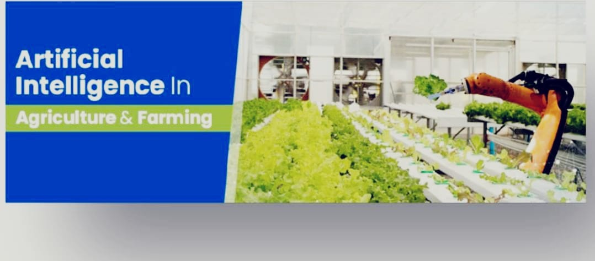
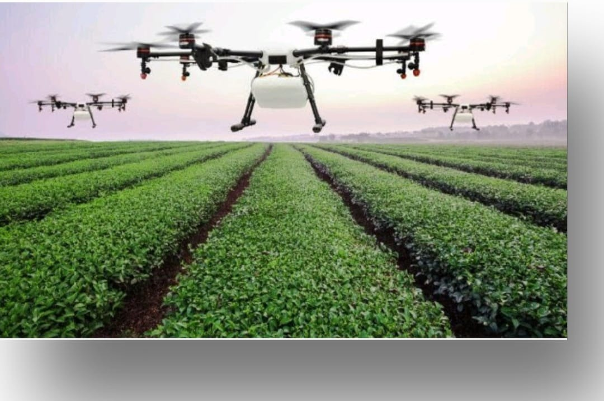
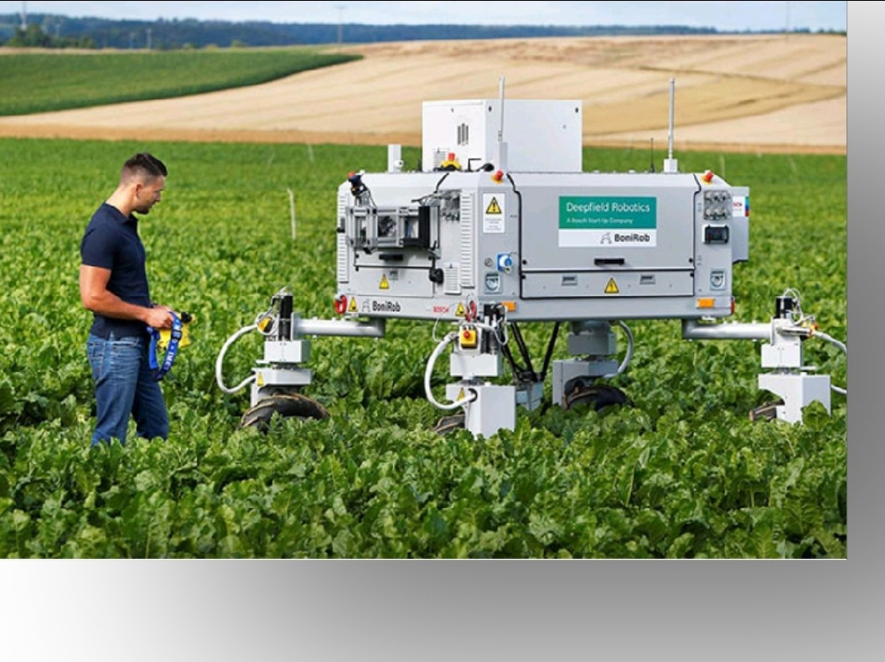
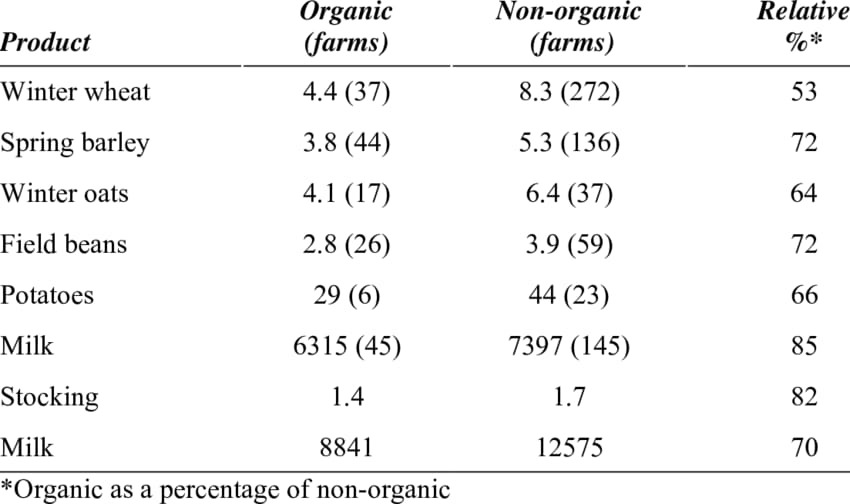

An organic farm is defined as a farm where organic agricultural products are being produced for sale. This includes operations that are certified or in the process of becoming certified by an organic certifying body.
Agricultural system is the process of cyclic activities based on the natural sources. Current agricultural system is using equipment, fertilizers, pesticide and hybrid seeds to get more production and productivity of crops. To get more yield and satisfy the food demand, chemical fertilizers and pesticides are used to protect the crops. The organic manures are easily decomposable and not harmfulto environment and human health. This paper presents a study on organic and inorganic fertilizers, their impacts and side effects. It also surveys the computer algorithms and tools which play a major role in the field of farming to save and support ecology.Optimization algorithms can be applied to optimize the usage of fertilizers and organic manures in the effective manner. 
Artificial Intelligence is a discipline that can empower machines to execute tasks in real-time situations and cognitive processing as the human mind. Interestingly, applications of artificial intelligence in agriculture guides farmers through the process of growing, sowing, harvesting, and sale of produce. A plethora of artificial intelligence services such as recommendation engines, predictive analytics, computer vision, coupled with IoT devices can significantly boost agricultural productivity.
Crop Monitoring by using cameras and sensors embedded inside, the drones gather information about plants down to a single leaf. 
With the help of AI, farm data like temperature, weather conditions, soil conditions, and soil usage can be effectively collected and analyzed to influence decision making on the farm which makes best possible crop suggestion before the season keeping the past data and other sensor, environment data in the view.
Producers continue to integrate technology, mechanization and improved processes to their operations. These allow farms to create efficiency, achieve scale and maximize profitability. Farms are using data-driven technologies, such as GPS and GIS soil mapping, to bring increasing precision and accuracy to seeding, harvesting and input use. Technologies in the greenhouse and livestock sectors are advancing the world of farm automation at the push of a button. 

The agricultural sector is set to receive a facelift in organic farming and other aspects of safe farming with AI-driven precision farming techniques. Artificial intelligence is taking over the world one sector at a time, and there is a great promise on how it can bring effectiveness and ease to the highly labor-intensive agricultural processes.